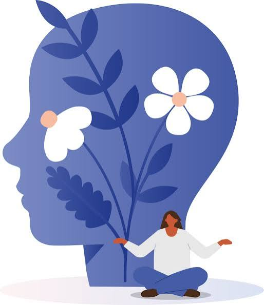

¿Qué es la Agitación Mental?
La agitación mental ocurre cuando nuestra mente es constantemente atraída hacia múltiples estímulos, ideas, preocupaciones o emociones de forma vertiginosa.

Redes de Bienestar
Un proyecto enfocado en la salud mental busca entrelazar tres niveles fundamentales para lograr el bienestar integral y el éxito escolar:
La agitación mental ocurre cuando nuestra mente es constantemente atraída hacia múltiples estímulos, ideas, preocupaciones o emociones de forma vertiginosa.
